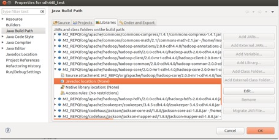

For Ubuntu and Mac Users
Shuo Yang, Bradley S. Rubin, PhD 9/17/2013
Note: This document assumes a package name of edu.stthomas.gps and a project name of SEIS736, so change these to meet your requirements
First, open a shell terminal and check if Maven version 3 is already installed.
$ mvn -v
Note for Mac Users: If you install XCode, Maven 3 should be installed for you
If it is not installed, enter the following command to install (make sure you have access to the Internet)
$ sudo apt-get install maven
After it is completely done, type in 'mvn -v' again, you might see the following information
Apache Maven 3.0.4
Maven home: /usr/share/maven
Java version: 1.6.0_27, vendor: Sun Microsystems Inc.
Java home: /usr/lib/jvm/java-6-openjdk-amd64/jre
Default locale: en_US, platform encoding: UTF-8
OS name: "linux", version: "3.8.0-30-generic", arch: "amd64", family: "unix"
To install Eclipse, enter the following command (make sure you have access to the Internet)
$ sudo apt-get install eclipse
Change your working directory to Eclipse's workspace. Assume it is under you home directory.
$ cd ~/workspace
Enter the following command
$ mvn archetype:generate -DgroupId=edu.stthomas.gps -DartifactId=SEIS736 \
-DarchetypeArtifactId=maven-archetype-quickstart -DinteractiveMode=false
Note: The backslash at the end of the first line means the command is not complete. We often use it for a long command, so if you want to enter the command on two lines, use it. But if you type the command on one line, you should not type backslash.
After it is done, there will be a directory called SEIS736 created under the current directory. Go into this directory
$ cd SEIS736
Enter the following command (make sure you have access to the Internet):
$ mvn -Declipse.workspace=/home/username/workspace \
eclipse:configure-workspace eclipse:eclipse
Note: remember to replace 'username' with your real user name
Replace the pom.xml file (under the directory SEIS736) with this one
$ mvn eclipse:clean eclipse:eclipse
Go to your home directory
$ cd ~
Open .bashrc file with a text editor, and add the following line to the end of the file, then save and quit.
export M2_REPO=$HOME/.m2/repository
Enter the following command
$ source .bashrc
Start eclipse, and select File->Import->Existing Projects Into Workspace
Choose SEIS736 and import it into Eclipse

You can now add source file to SEIS736->src/main/java->edu.stthomas.edu and all the Hadoop references should resolve.
Note: This manual step is currently necessary because Cloudera is missing the Javadoc JAR for hadoop-core.
Go to File->Properties, select M2_REPO/org/apache/hadoop/hadoop-core/2.0.0-mr1-cdh4.4.0/hadoop-core-2.0.0-mr1-cdh4.4.0.jar

Double click Javadoc location

Enter http://archive.cloudera.com/cdh4/cdh/4/hadoop/api/ into Javadoc location path, then click OK.
Under your project directory SEIS736, enter the following command
$ mvn package
Then in Eclipse, right click SEIS736 and select Refresh. Then you will see a jar file called SEIS736-1.0.jar generated under target directory.
Under SEIS736, create a shell script called upload.sh with the following two lines of code
#!/bin/sh
scp -r ~/workspace/SEIS736/target/SEIS736-1.0.jar \
username@hc.gps.stthomas.edu:/home/username/
Then enter the following command
$ mvn install